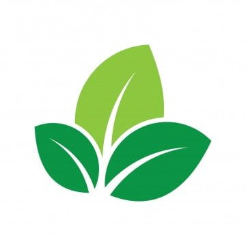
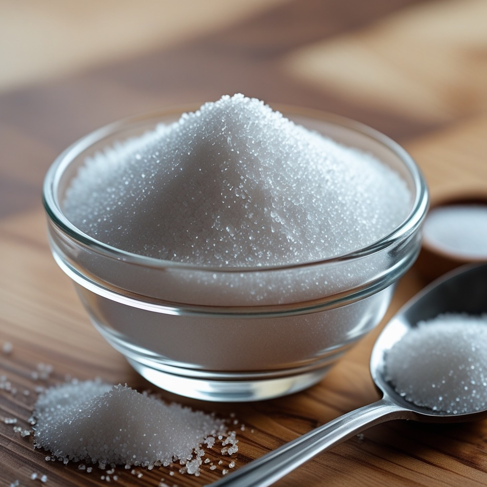

Keunggulan
Sirup Yogas Delima

Produk unggulan di Kabupaten Kudus dengan cita rasa khas dan berkualitas
Nikmat Dalam Sajian Hangat Maupun Dingin

Bahan Alami dan Sari Buah Pilihan

Gula Murni Tanpa Pengawet
Memiliki Banyak Varian Rasa
Legalitas dan Bersertifikasi Halal